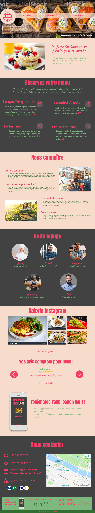

Projet d'étude Goffr
Maquette UX /UI
Le brief client
Nous aimerions donc une identité et un site jeune, propre, fun et frais, sans tomber dans le "green washing" à outrance. Nous désirons des parties explicatives où nous faisons comprendre rapidement à nos visiteurs en quoi nous ne sommes pas juste des personnes ayant décidé de vendre des gauffres en faisant du rebranding "healthy", mais bel et bien une nouvelle philosophie sur ce produit, en faisant un repas complet, sans dessert, mais incorporant la juste dose d'équilibre et de plaisir du palais. Nous voulons qu'ils sachent qui nous sommes et nos objectifs. Nos produits sont vendus uniquement accompagnés d'une petite salade de fruits frais, et d'un verre de cidre, avec ou sans alcool, sans sucre ajouté (thé, café, etc...) afin d'assurer que la dégustation globale se fera dans des proportions correctes par nos clients, et ce même s'il s'agit d'un achat rapide sur le pouce.
La maquette desktop :
L'application
Nous aimerions une application qui invite à commander l'un de nos menus en ligne (pas de phase de paiement, le menu est juste commandé, le paiement se fait lorsque le client passe chercher sa commande). Le retrait de commande se fait dans un corner spécial de notre boutique, qui leur permet de passer en priorité lorsqu'il y a une file d'attente.
- Nous voulons proposer chaque jour au moins 3 pauses sucrés différentes composés :
- d'une gaufre salée
- d'une compote ou salade de fruits
- ou boisson chaude complémentaire (thé, café, etc...)